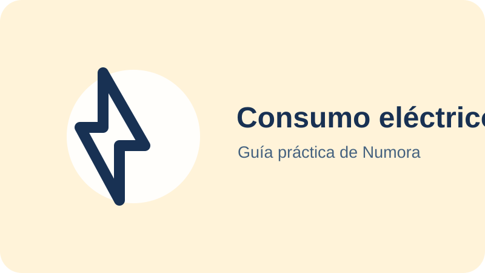

Resumen rápido
Divide la potencia en vatios entre 1.000 para obtener kW. Multiplica por las horas de uso para calcular kWh y después por el precio de la electricidad.
Fórmula y ejemplo
Un calefactor de 1.500 W utilizado dos horas consume 3 kWh. Si el kWh cuesta 0,25 €, el coste variable sería de 0,75 € por día y unos 22,50 € en 30 días.
La cifra cambia si el equipo regula su potencia o se apaga mediante termostato.
Potencia, energía y factura
Los W describen la potencia instantánea; los kWh, la energía acumulada. La factura añade elementos que esta operación no reproduce: potencia contratada, impuestos, alquiler y posibles tramos o ajustes.
Cómo obtener datos mejores
- Revisa la etiqueta o ficha técnica.
- Estima el tiempo real de funcionamiento.
- Consulta el precio efectivo en una factura reciente.
- Para aparatos variables, contrasta con un medidor de enchufe.
El IDAE publica recomendaciones de ahorro energético para hogares.
Cómo leer la potencia de un aparato
La potencia suele aparecer en la placa de características, el manual o la ficha técnica. Puede expresarse en W o kW: 1 kW equivale a 1.000 W. En aparatos con varios modos conviene usar la potencia del modo que realmente utilizas.
Una potencia alta no implica por sí sola un gasto anual alto. Un secador potente utilizado unos minutos puede consumir menos al mes que un aparato de baja potencia encendido muchas horas.
Consumo continuo y consumo por ciclos
Una lámpara sencilla consume de forma bastante estable mientras permanece encendida. En cambio, frigoríficos, termos, aires acondicionados, hornos y calefactores se conectan y desconectan según temperatura, programa y aislamiento. Multiplicar la potencia máxima por todas las horas ofrece entonces un escenario superior, no una medición exacta.
Para afinar puedes observar el tiempo efectivo de funcionamiento o utilizar un medidor de enchufe compatible con la potencia del aparato. En equipos instalados de forma fija es preferible consultar documentación técnica o a un profesional.
Cómo comparar dos alternativas
Calcula cada aparato con el mismo número de horas y el mismo precio por kWh. La diferencia mensual estimada permite valorar cuánto tardaría en compensarse un precio de compra superior.
Evita usar únicamente la potencia anunciada: revisa también capacidad, programa, etiqueta energética y uso real. Una comparación útil mantiene constantes las necesidades que ambos equipos deben cubrir.